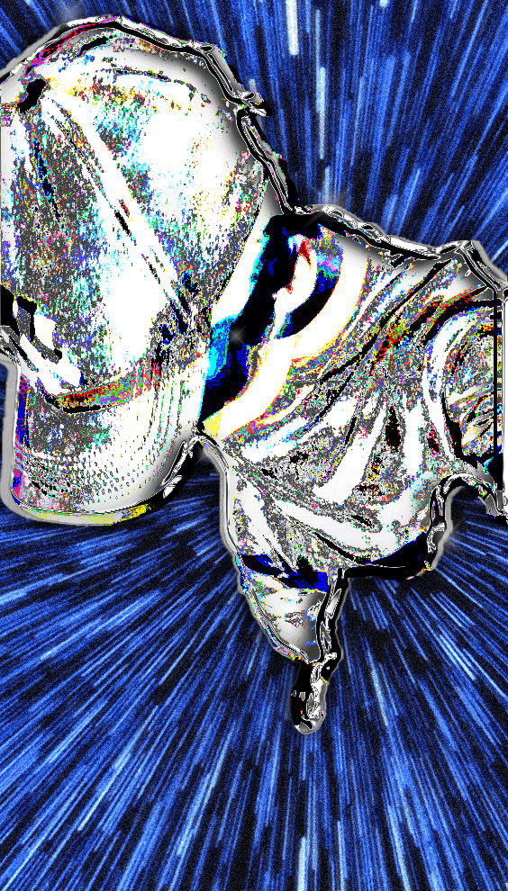

New World: My Best Track
"New World" is a track that stands out in my discography for its beautiful melodic and evocative ethereal sounds. The production process was both challenging and rewarding, and it taught me a lot about mixing and sound design.
One of the key elements that make "New World" special is its fantastic mixing. I spent a significant amount of time fine-tuning the balance between the melodic elements and the drum selection. The drum patterns were carefully chosen to complement the track's ethereal vibe while maintaining a strong rhythm.
Additionally, the use of unique and atmospheric sounds helped create a captivating listening experience. I experimented with different effects and layering techniques to enhance the overall depth and texture of the track.
This track represents a major milestone in my journey as a music producer, and I'm proud of how it turned out. It continues to be one of my favorite compositions to date.